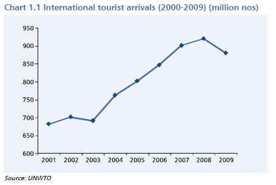

Kerala Tourism


Over the past more than one and a half decades, the total number of in-coming tourists increased sharply in Kerala.
Between 1997 and 2012, it almost doubled from 51 lakhs to 108 lakhs, registering an annual growth rate of 9.5 percent.
Clearly, foreign tourist flow has been growing faster in Kerala than at the national level.